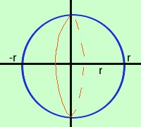

|
Vediamo come trovare il volume della sfera:  consideriamo la circonferenza di centro l'origine e raggio r (x2 + y2 = r2) e consideriamo sull'asse x l'intervallo da -r ad r; troveremo il volume della sfera di raggio r Esplicitiamo la y y2 = r2 - x2 y = Il piu' e meno significa che sono considerate sia la semicirconferenza sopra l'asse x che quella sotto l'asse x: a noi ne basta una; consideriamo la semicirconferenza sopra l'asse delle x y = Applico la formula ricordando che il quadrato e la radice si annullano reciprocamente
|